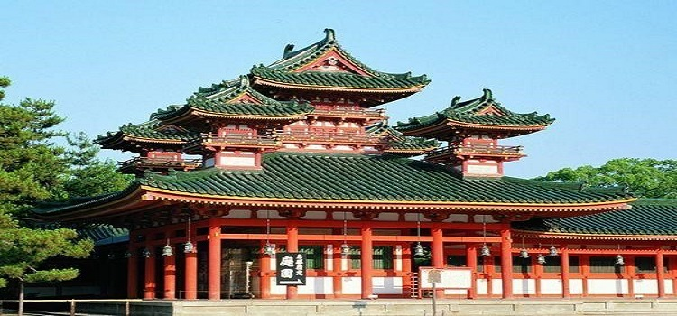

著名景点
#明治神宫#
明治神宫是位于日本东京都涩谷区代代木的神社，供奉有明治天皇（1912年去世）和昭宪皇太后（1914年去世），是日本神道的重要神社。
神宫地处东京市中心，占地70公顷，紧邻新宿商业区，占据了从代代木到原宿之间的整片地带，是东京市中心最大的一块绿地。
神宫于大正4年（1915年）开工，动用树木约10万棵、青年志愿者约11万人。大正9年（1920年）竣工，首日参拜者总数达50万人。平成28年（2016年）新年期间，明治神宫的参拜人数约达316万，居东京第1位，日本第2位。
地址：日本东京都涩谷区代代木神园町1-1

图：明治神宫
#浅草寺#
浅草寺位于东京台东区，是日本现存的具有“江户风格”的民众游乐之地。浅草寺是东京都内最古老的寺庙。寺院的大门叫“雷门”，正式名称是“风雷神门”，是日本的门脸、浅草的象征。
雷门是公元942年为祈求天下太平和五谷丰登而建造的。几经火灾焚毁，后于1960年重建。雷门正门入口处左右威风凛凛的风神和雷神二将，镇守着浅草寺。雷门最著名的要数门前悬挂的那盏巨大的灯笼，远远可见黑底白边的“雷门”二字，赫然醒目，着实为浅草寺增添不少气派。
人们为了祈祷风调雨顺和五谷丰登而供拜这两座神。门内有长约140米的铺石参拜神道通向供着观音像的正殿。作为了解日本民族文化的旅游名胜，来自世界各国的游客，络绎不绝。
地址：日本东京都台东区浅草2-3-1

图：浅草寺
#新宿御苑#
新宿御苑是东京最大的日式庭园和法式庭园相结合的公园，横跨东京都新宿区与涩谷区，面积约58公顷。该处在江户时代为内藤家的宅地，其后成为宫内厅管理的庭园，现在则属环境省管辖的国民公园。
新宿御苑是东京最大的日式庭园和法式庭园相结合的公园，位于市中心，绿荫环绕的和式庭院与周围的摩天大楼形成绝妙的反差。日本著名动画人新海诚的《言叶之庭》就是以这里为背景的纯爱故事。
每年的樱花季节，由日本首相发出邀请的例行“赏樱会”就在此举行。新宿御园的美四季不休，春天游人可欣赏到烂漫的樱花，夏季时逛逛园林，享受小桥流水、亭台楼榭间的舒爽，秋季漫天的红叶则引来如织的游人，怒放的菊美不胜收，冬季的热带和亚热带植物温室繁盛于此，使寒冷的冬季充满暖意。
地址：横跨东京都新宿区与涩谷区
图：新宿御苑
#东京晴空塔#
别名东京天空树，正式命名前称为新东京铁塔（新东京タワー）、墨田塔（すみだタワー），是位于日本东京都墨田区的电波塔。由东武铁道株式会社和其子公司东武塔天空树共同筹建，于2008年7月14日动工，2012年2月29日竣工，同年5月22日正式对外开放。
其高度为634.0米，于2011年11月17日获得吉尼斯世界纪录认证为“世界第一高塔”，成为全世界最高的自立式电波塔。也是目前世界第二高的建筑物，仅次于迪拜的哈利法塔（828米）。
地址：日本东京都墨田区押上1-1-2
图：东京晴空塔远景
#银座#
日本东京中央区的一个主要商业区，号称“亚洲最昂贵的地方”，象征着日本的繁荣，以高级购物商店闻名。这里汇聚着世界各地的名牌商品，街道两旁巨型商场林立，时尚、个性的服饰随处可见，算得上是一个购物者的天堂。
街道附近汇聚有意大利、法国、阿拉伯等地的餐厅，人们在这一条街上，能品尝到世界各地的美味。银座分为银座一丁目（类似于汉语里“街”）至银座八丁目，银座四丁目与银座五丁目之间被晴海街所分隔，全部8个丁目由中央大道贯通。
17 世纪初叶这里开设了第一家店，随后在在新桥与京桥两桥间，形成了繁盛的商业区，成为东京其中一个代表性地区，同时也是日本有代表性的最大最繁华的商业街区。
象征日本自然、历史、现代的三大景点（富士山，京都，银座）之一的银座，与巴黎的香榭丽舍大道，纽约的第五大道并列为世界三大繁华中心。银座两旁人行道宽阔，每逢周末，车辆禁止通行，变成人潮拥挤的步行商业街。
地址：日本东京都中央区银座
图：中央区银座商业区夜景
#东京国立博物馆#
位于东京台东区上野公园北端，内有本馆、东洋馆、表庆馆及法隆寺宝物馆4个展馆共43个展厅，陈列面积1.4万余平方米，约有11万件收藏品，其中国宝87件，重要文物634件，以及一些受委托保管的文物。
物馆的主体建筑由象征日本历史的建筑物构成，历来被称之为”美术馆建筑与博物馆建筑的博物馆”。主馆中分类展出了日本美术品、出土文物、工艺品。东洋馆中陈列着亚洲、埃及等地的美术品和考古文物。另外法隆寺宝物馆中收藏有7至8世纪奈良法隆寺中的宝物约300件。馆内时常举办以某一专题为中心的”专题展览”以及跨学科的展览。
地址：日本东京台东区上野公园北端
图：东京国立博物馆外景图
#国技馆#
位于日本东京都墨田区两国，为东京著名的运动场馆，是用于举行日本国技大相扑的设施，1月、5月、9月举办大相扑赛事。1909年建于此地的国技馆在历经战乱和搬迁之后，1984年再次建在了两国。建筑高40m、地上3层、地下1层，可移动式池座，可容纳人数11，500人，除大相扑以外还举办职业拳击等格斗赛。
1F有相扑博物馆，可以了解大相扑的历史和文化等。国技馆周边有很多“相扑部屋”（相扑力士培训处。力士必须隶属于某个“部屋”），在两国一带漫步，常常撞见身着传统服装的相扑力士。另外，还有很多经营力士代表食物“什锦火锅”的饮食店，可以品尝与相扑力士一样的料理。
地址：日本东京都墨田区两国
图：国技馆活动场景
私房景点
#烤鸡肉串横町#
位于新宿区，有很多小巷组成，这些小巷内分布着很多小酒吧和餐馆，这些酒吧和餐馆的面积都很小，一般只有2-6个座位，但是都给顾客创造了非常私密的空间。
在这些小巷里，你可以品尝到味道不错的日式烧鸡等当地的美食，还可以在酒吧或者带有日式风格的居酒屋内，喝喝清酒好啤酒，看看周边的当地人，感受一些当地的风土人情。
地址：日本东京都新宿区西新宿7丁目
图：烤鸡肉串横町
#东京大学#
东大诞生于1877年，由“东京开成学校”与“东京医学校”在明治维新期间合并改制而成，初设法学、理学、文学、医学四个学部和一所大学预备学校，是日本第一所国立综合性大学，也是亚洲最早的西制大学之一，其部分科系最早可以溯源到灵元天皇时期，作为资本主义文明浪潮冲击下的直接产物，东大在日本社会有着举足轻重的历史性地位。
学校于1886年更名为“帝国大学”，这也是日本建立的第一所帝国大学；1897年，其易名为“东京帝国大学”，以区分同年在京都创立的京都帝国大学；二战后的1947年9月，其正式定名为“东京大学”。作为一所世界顶尖的综合大学，东大在2016年CWUR世界大学排名中名列世界第13位、日本第1位；其在ARWU世界大学学术排名中位列世界第20位、日本第1位。
目前，东京大学设有10个学部，15个研究生院，11个附属研究所，13个大学研究中心，3个附属图书馆和2个高等研究所。除了本乡、驹场、柏三个主校区，东京大学的附属机构遍布全国。
地址：日本东京都文京区本郷七丁目3番1号
图：东京大学校园
#六本木新城#
六本木新城2003年正式开业，总建筑面积78万平方米，历经17年完成建设，由美国捷得，KPF等多家设计公司联合完成。它是一座集办公、住宅、商业设施、文化设施、酒店、豪华影院和广播中心为一身的建筑综合体；具有居住、工作、游玩、休憩、学习和创造等多项功能。
六本木将大体量的高层建筑与宽阔的人行道、大量的露天空间交织在一起。建筑间与屋顶上大面积的园林景观，在拥挤的东京都成为举足轻重的绿化空间，已经成为著名的旧城改造、城市综合体的代表项目。
地址：日本东京闹区内的六本木